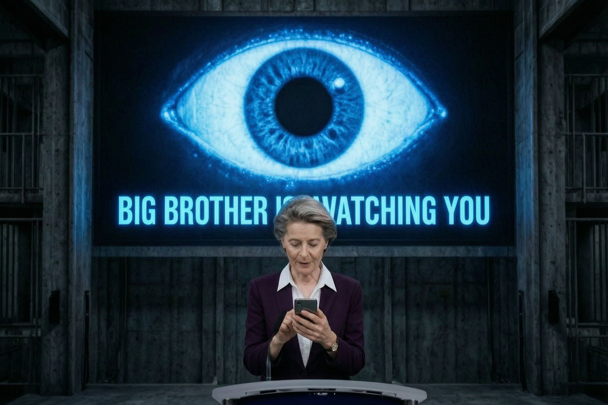

Abstimmen, bis es passt

Am heutigen Donnerstag stimmt das EU-Parlament zum dritten Mal über die Chatkontrolle ab. Die anlasslose Kontrolle privater Nachrichten hatte es zuvor mehrfach abgelehnt, zuletzt im März 2026. Diesmal soll ein Verfahrenstrick nachhelfen.
Der Kniff steckt in der Geschäftsordnung. Am 7. Juli winkte eine knappe Mehrheit (laut Berichten 331 zu 304) ein Dringlichkeitsverfahren durch, das die Beweislast umdreht. Der Vorschlag gilt danach als angenommen, sofern nicht eine absolute Mehrheit von 361 Abgeordneten ausdrücklich dagegen stimmt. Wer das Gesetz verhindern will, muss also eine ganze Mehrheit mobilisieren; wer fehlt oder sich enthält, stimmt faktisch zu. Aus einem Nein wird so leicht ein Ja durch Abwesenheit.
Zur Abstimmung steht die Verlängerung der „freiwilligen" Chatkontrolle 1.0: die Übergangsregel, die Anbieter ermächtigt, unverschlüsselte private Nachrichten automatisiert und ohne jeden Verdacht auf Missbrauchsmaterial zu durchsuchen. „Freiwillig" klingt harmlos, meint hier aber das massenhafte, anlasslose Scannen ganz normaler Alltagskommunikation. Das verpflichtende Aufbrechen verschlüsselter Chats, das sogenannte Client-Side-Scanning der „Chatkontrolle 2.0", ist damit noch nicht beschlossen. Die Richtung ist trotzdem gesetzt.
Das eigentlich Bemerkenswerte ist nicht der Inhalt, sondern das Verfahren. Ein gewähltes Parlament hat mehrfach Nein gesagt. Statt das zu akzeptieren, wird neu terminiert und die Abstimmungsregel so gedreht, dass Untätigkeit als Zustimmung zählt. Kinderschutz liefert das Etikett, das Mittel ist die Durchleuchtung von Millionen Unbeteiligten und ein Parlament, das gegen die eigene Ablehnung anrennen muss.